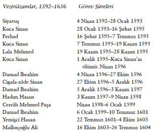
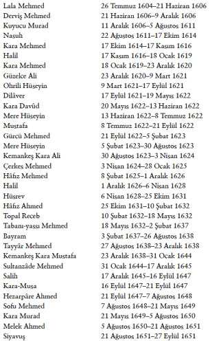
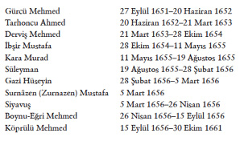

Veziriâzamlar
Pâdişah vekîli sıfatını taşıyan veziriâzamlar XVIII. yüzyılda bu yetkiyi her zaman temsil etme ve yeine getirme gücüne sahip olamamışlardır.



1700 tarihine kadar devlet idaresinin başı veziriâzam makamına, yalnız askerî bir başarı kazanmış kumandanlar geliyordu. 1683–1699 bozgun yıllarından sonra Osmanlı Devleti artık savaş meydanlarında bir başarı peşinde koşmayacak, devletin devamı için diplomasinin yaşamsal önemini benimseyecek, yeni dönemde idarenin başına dış işlerini temsil eden reîsülküttâblar gelecektir. Bunlardan ilki Karlofça Barış Antlaşması’nı imzalayan Râmi Mehmed Paşa’dır. XVIII. yüzyıl boyunca veziriâzamların çoğu bu meslektendir.
Saray personel ve yönetimine, veziriâzamdan bağımsız olan kapıağası, diğer adıyla bâbussaâde ağası veya ak-hadım ağa bakardı. Saraydan çıkma sırasında vali ve kumandanların atanmasında başlıca yetki sahibi olan kapıağası, devlet içinde çok önemli bir mevki sahibi idi. Dışardan sultanla temas kurmak isteyenler, onun aracılığına başvurmak zorundaydılar. Sultanın en yakın adamı kapıağası idi. II. Bayezid çoğu kez, kapıağasını veziriâzamlık ve önemli valiliklere getirmiş, böylece hükümet sarayda odaklanmıştır. Zira, Cem Sultan’ın geri gelmesi kaygısıyla yaşayan II. Bayezid, önemli makamlara yalnız kendine en yakın kimse sıfatıyla ak-hadım ağalarını tayin etmekteydi. Veziriâzam, kapıağasının azli ve kendi adayının atanması için sultana başvurabilirdi.
XVII. yüzyılda veziriâzamdan bağımsız olan en büyük siyasî gücü ulemânın başı şeyhülislâm temsil etmiştir. Osmanlı Devleti’nde ulemâ, devlet tarafından silsile denilen sıkı bir hiyerarşi kapsamında örgütlenmişti. Kadı ve din görevlilerini atama ve azletme yetkisi elinde olan Anadolu ve Rumeli kadıaskerleri, Dîvân’daki icra üyeleriydi. Şerîat alanına giren davalarda son hükmü onlar verirdi. Ulemânın başı olan şeyhülislâm ise Dîvân üyesi sayılmazdı; bağımsızdı, idarî-icraî yetkisi yoktu. İdarede tarafsız kalmak mümkün olmadığı inancıyla, İslâm hukukunun tarafsız yorumlanması görevi, fetvâ sahibi şeyhülislâm ve müftilere bırakılmıştı. Medrese hocalarının ve müftilerin başı şeyhülislâm idi. XVII. yüzyılda şeyhülislâmların fetvâlarıyla devlet işlerinde merkezî bir yetki sahibi olduklarını göreceğiz. İsyan eden asker ve halk, hareketlerini meşrû göstermek için daima şeyhülislâmdan fetvâ almaya çalışırlardı. Yeni bir şeyhülislâm atanmasına ilişkin dilekçeyi sultana Veziriâzam Yemişci Hasan götürmüş, bütün baskılarına karşı sultan, şeyhülislâmlığa kendi öğretmenini getirmişti. Şeyhülislâmlarla sürekli çatışma halinde olan Hasan Paşa, sonunda Şeyhülislâm Sun’ullah’ın azledilmesini sağlamıştır. Öte yandan, uyumu sürdürmek isteyen Veziriâzam Cerrah Mehmed Paşa, bütün önemli devlet sorunlarında şeyhülislâma danışmıştır. Şeyhülislâm bu dönemde o derece otorite sahibi olmuştur ki, onun fetvâsıyla sultanlar tahttan indirilmiş; birçok veziriâzam yerinden atılmıştır.
Şeyhülislâm medrese üyelerinin atanma, terfî ve azillerine ilişkin dilekçeyi veziriâzama verirdi. XVII. yüzyılda şeyhülislâmlar, molla derecesindeki büyük kadıların atanma ve azlinde öneride72 bulunma yetkisini elde ederek, ulemâ örgütünün denetimini ele geçirmiştir. Veziriâzam nasıl sultanın yürütme yetkisinin mutlak temsilcisi ise, şeyhülislâm da sultanın İslâm cemaatinin başı imâm sıfatıyla dinî yetkilerinin mutlak temsilcisi sayılmıştır. Sultan I. Selim, Şeyhülislâm Zenbilli Cemâlî Efendi’nin devlet kararlarına karışmasını şiddetle reddetmiştir. Kanunî Sultan Süleyman, Şeyhülislâm Ebussuûd’la yakınlık kurmuş, örfî devlet hukuku karşısında şerî hukukun üstünlüğü yolunu açmıştır.
Çeşitli kısıtlamalar, veziriâzamın sultanınkine eşit bir güç kazanmasını önlemiştir. Sultanın mutlak temsilcisi sıfatıyla veziriâzamın bütün devlet birimlerini denetim ve gözetim hakkı vardır. Bu da, bürokrasinin bağımsızlığını ve devlet gücünün birliğini sürdürmeye yeterli sayılmıştır. Veziriâzamın onayı olmadan hiçbir makamda azil ya da atama işlemi olamazdı. Pâdişahın kendi el yazısıyla emri, yani hatt-i hümâyûn dışında fermânlar doğrudan veziriâzam tarafından çıkarılırdı. Veziriâzam tarafından sultanın onayına sunulan Dîvân-i Hümâyûn kararlarının reddedilmemesi bir gelenek olarak yerleşmiştir. Veziriâzamın bağımsızlığı, Orta-Doğu devletlerinin değişmez bir ilkesidir. III. Murad’dan başlayarak sorumsuz musâhiblerin ve saray mensuplarının araya girmesiyle veziriâzamın yetkileri zayıflamıştır; Koçi Bey ve öteki ıslahat lâyiha sahipleri tarafından bu durum, devlette “tagayyür ve fesâd”ın başlıca kaynağı sayılacaktır.
Murad Paşa’yı veziriâzamlığa atayan I. Ahmed, yazdığı bir hatt-i hümâyûnda, “Sana veziriâzamlığı kimsenin tavsiye ve görüşüne başvurmadan verdim ve mührümü gönderdim” demiştir. 1656’ya doğru devletin derin bir bunalıma düştüğü sırada Köprülü Mehmed Paşa veziriâzamlığı, şu şartlarla kabul etmişti: Sunduğu önerilerden hiçbirini sultan reddetmeyecek, bütün atama ve azilleri kendisi yapacak, sultanın veziriâzamdan başka danışmanı olmayacak, hiçbir karşıtını saray benimsemeyecek ve kendisine karşı yapılan bütün iftiralar gözardı edilecek.
Kamuoyunun Etkisi
Osmanlı politikasını belirlemekte kamuoyunun da, genellikle kabul edildiğinden daha büyük bir etkisi vardır. XVI. yüzyılın ikinci yarısında kapıkulu askeriyle pazar zanaatkârları arasında bir çıkar birliği oluştu. Kapıkullarından birçoğu zanaatkâr ya da tüccâr olmuş, bazıları da paralarını ticarî girişimlere ya da faize yatırmıştı. İstanbul halkı haksız baskılar karşısında ayaklanmaya hazırdı; bu tür karışıklıklar genellikle mâlî ve ekonomik sıkıntı zamanlarında patlak vermiştir. Hükümetin kötü önlemleri sonucu sıkıntıya düşen halk, ulemâyı başlarına alarak harekete meşrû bir görünüm verirdi. 1648’de Sultan İbrahim’in, 1687’de IV. Mehmed’in, 1703’te II. Mustafa’nın, 1730’da III. Ahmed’in ve 1807’de III. Selim’in tahttan indirilmelerine yol açan ayaklanmalar bu türdendir.
Halk ayaklanmaları ancak ulemânın işbirliğiyle başarılı olabilirdi. 1651’de, İstanbul halkı yeniçeri cuntası iktidarına karşı ayaklanmıştır. Yasalar reâyanın silâh taşımasını yasakladığından, eyâletlerde köylü ayaklanmaları seyrekti. Köylülerin toprağı bırakıp dağılması, devlete karşı ayaklanmalar kadar kaygı veren bir çeşit eylemsiz direnişti; çünkü bu durum, devlet hazinesini ve timar sipahilerini gelir kaynaklarından yoksun bırakarak devleti güçten düşürürdü. Köylünün topraklarını terk edip dağılmasından, “perâkende” olmasından korkan devlet, zaman zaman köylüyü kayıran önlemler alır, kimi zaman vergileri azaltmaya veya affetmeye mecbur olurdu.
Genelde Osmanlı sultanlarının kamuoyunu kendilerinden yana çekme zorunluluğu, onları âdil düzen politikasını yenilemeye iten önemli bir faktördür. Adâletnâme ilânı bunun bir ifadesidir. Hükümdar sevilmezse, halk arasında, Şerîat’a saygı göstermediği, şarap içtiği ya da başka uygunsuz davranışlarda bulunduğu söylentileri çıkardı. Bir despot olan IV. Murad, kendisi hem içki düşkünü, hem de içki yasağının en acımasız destekçisiydi. Sultan Murad, mutaassıp Kadızâde Mehmed’in etkisi altında kahve ve tütün yasakları getirmiştir. Bazı Osmanlı sultanları, Şerîat’a sadık görünmek için, namazlarını savsaklayanların ya da oruç tutmayanların cezalandırılması için zaman zaman genel fermân çıkarır, meyhâneleri kapattırırdı. Kendileri cuma günleri câmiye giderek cemaatle namazı hiç aksatmaz, yoksullar ve dervişlere sık sık sadaka verirlerdi. Kurban bayramlarında, yalnız İstanbul’da binlerce kurban kesilip yoksullara dağıtılırdı. Sultan, Mekke ve Medine’ye her yıl on binlerce altın dükalık hediye gönderir, sürre alayı denen bu hazine katarı Mekke ve Medine’ye varış yolu boyunca büyük merâsim ve gösterilere neden olurdu.73
Sultanlar dinî önderlerden, özellikle halkça tutulan şeyh ve dervişlerden her zaman çekinmişler ve onları kendilerine yaklaştırmaya ya da sert önlemlerle boyun eğdirmeye çalışmışlardır. Şeyh ve dervişler, genellikle karşıt halk hareketlerinin baş propagandacılarıydılar. Örneğin, III. Mehmed, câmilerde vaazlarıyla İstanbul halkını kışkırtan bir şeyhi kentten sürmüş, fakat halkın gösterileri sonucu geri gelmesi için izin vermek zorunda kalmıştır. IV. Murad, nüfuzlu bir Nakşbendî şeyhi olan Mahmud’u ve daha sonra yanına yedi sekiz bin kadar yandaş toplamış olan Sakarya şeyhini Ilgın’da idam ettirmiştir.
Veziriâzam Otoritesindeki Değişiklikler
Çağdaş eleştirilerde, XVII. yüzyılın ilk yarısındaki politik bunalımın temel sebebi olarak otorite birliğinin, yani veziriâzamın bağımsızlığının yitirilmiş olması ileri sürülmüştür. Köprülü Mehmed Paşa’nın, 1656 bunalımında diktatörce yetkilerle veziriâzam atanmış olmasıyla devlet kalkınma dönemine girecektir. Kendisinden sonra bu makama, oğlu Fazıl Ahmed Paşa (1661–1676) tam otoriteyle geçmiştir. Saraylılar ve yeniçeri cuntası iktidarı yerine Köprülüler yönetimi boyunca hükümet işleri veziriâzamın konağından yönetilmiş, sonuçta saraydaki Dîvân-i Hümâyûn toplantıları eski önemini yitirmiştir. Sultanın durum hakkında arz ve telhîs denilen raporlarla bilgi alması, emir ve istekleriniyse hatt-i hümâyûn denilen kendi eliyle yazılmış bir notla geri göndermesi usûlü bu dönemde uygulanır oldu (bkz. Ekler, Telhîsler).
Hükümetin veziriâzamın sarayına, Bâb-i Âli’ye taşınmasıyla Dîvân-i Hümâyûn vezirleri arka plâna düşmüş; doğrudan doğruya veziriâzamın hizmetindeki üç görevli önem kazanmıştır. Bunlar, veziriâzamın politik ve askerî konularda temsilcisi olan kâhya bey, Dîvân-i Hümâyûn’da şikâyet ve davalara bakan çavuş-başı ve uzun bir süredir Dîvân-i Hümâyûn’un başkâtipliğini yapmakta olup devlet antlaşmalarıyla nizâmnâmeleri muhafaza eden reîsülküttâb idi. 1720’den sonra bu görevliler, Paşa-Kapısı veya Bâb-i Âli’deki toplantılarda, vezir unvanıyla hükümetin birer üyesi hâline gelmişlerdir. Makamları, XIX. yüzyılda, sırasıyla, içişleri, adâlet ve dışişleri nezaretleri olacaktır.
Bu süreçte Defterdâr Kapısı da gelişerek, mâlî işler için bağımsız bir bölüm durumuna gelecektir. Baş-defterdâr, haftanın belli günlerinde Bâb-i Âli’de yapılan toplantılara katılırdı. Veziriâzam önemli kararlar almadan önce, genel danışma için birlikte Dîvân toplantıları yapardı.
Osmanlı devlet idaresinde pâdişah bir sefere gittiğinde pâyitaht İstanbul’da kendi adına gelişmeleri izleyecek ve pâdişaha bildirecek bir kaimmakâm bırakırlardı, buna vekîl-i saltanat da denirdi. Fâtih, Uzun Hasan’a karşı sefere çıkarken oğlu Cem Sultan’ı bu biçimde atamıştı.
III. Murad döneminde kendisine çok güvenilen Kara (Lala) Mustafa Paşa kaimmakâm, daha sonra veziriâzam olmuştur.
Pâdişahın yaşının küçüklüğü nedeniyle doğrudan doğruya icra-yi saltanat edemediği zamanlarda onun yerine devlet işlerine bakan yakını vekîl-i saltanat sıfatı taşır. Kaynaklarda Kösem Sultan, vekîl veya vekîl-i saltanat sıfatıyla anılmıştır.
Pâdişahların Danışmanları
Osmanlı pâdişahlarının, seçkin ulemâ, şeyhler, şâir veya münşîlerden musâhib veya nedîm denilen kişisel danışmanları olurdu. Pâdişahlar yetişme çağında hocalardan ders alırlardı. Başhocalar (Hoca Sa’deddîn, Ömer Efendi gibi) sultanlar üzerinde üstün nüfuz sahibi olmuşlardır. Özel eğitimciler, şehzâdenin kültürlü, zarîf, civânmerd bir Osmanlı çelebisi olarak yetişmesini sağlardı.74 III. Murad’dan (1574–1593) sonra, Kafes şehzâdeleri mutaassıp hocalar, bilgisiz musâhibler ve câriyelerle vakit geçirmiştir. Klasik Doğu kültürü yerine, yalancı Şeyh Şucâ’, Cinci Hoca veya Müneccimbaşı Hüseyin gibi üfürükçü ve sahtekârlara inanmışlar, sultanlara böyle kişiler akıl hocalığı yapmışlardır.
Bir Arnavut devşirmesi olan Mimar Koca Kasım Ağa, 1622–1646 döneminde mimarlıkta olduğu gibi musâhib veya kethüda sıfatıyla en önemli siyasî kararlarda düşüncesine başvurulmuş bir kişidir. 1622 yılında başmimar olarak pâdişah ve devlet ricâliyle yakınlık kurmuş, Sultan İbrahim zamanında değerli veziriâzam Kara Mustafa Paşa’nın musâhibi (yakın özel danışmanı) olmuş, devlet işleriyle yakından tanışmış, veziriâzamın katli üzerine sürgüne gönderilmiş, Cinci Hoca’nın himayesinde İstanbul’a dönüp 1645’te yeniden başmimar olmuş, bir ara kul-kethüdalığı gibi askerî-siyasî önemli mevkileri işgal etmişti. Kösem Sultan onu tutmadı. Kösem’in ölümünden sonra Kasım Ağa, Vâlide Turhan Sultan’ın kethüdası olarak saltanat işlerinde başmüşavir durumuna geldi (1651). Bir ara sürgüne gönderilmekle beraber geri çağırıldı, 1656’da büyük bunalım sırasında Köprülü Mehmed Paşa’nın iktidara gelmesinde başlıca rol sahibi oldu.
Kethüdalar
Osmanlı toplumunda kethüda (kâhya) nüfuz ve servet sahibi kimselerin hizmetinde onların ve örgütlerin her türlü işini gören yardımcılarıdır. Perde arkasında efendilerinin kararlarını ve hareketlerini çoğu zaman onlar belirler. Pâdişahların özel akıl hocası musâhibler olduğu gibi Kösem ve Turhan Sultanların da, akıl hocalığını yapan kethüdaları vardı.
Kösem’in ilk kethüdası Üsküdârî Behram Ağa devlet işlerini bilen kişi idi. Behram kethüda, Kösem sayesinde devlet işlerine el uzatan “azîm devlet ve vus’ata sahip kimesne idi. Vâlide Sultan hazretlerinin cümle umûruna ve bina ettirdiği hayrata nâzır ve mu’temedin aleyh olup hayli mâl ve emlâk peyda itmiş idi.” Kösem her işi ona danışırdı (mutemedin ‘aleyh) onun ölümü üzerine (1646) yerine Arslan Ağa geldi. Arslan Ağa, Seydişehirli Kurt Ağa’nın oğlu idi.
Kösem Sultan’ın harem dışı işlerinde yardımcısı Arslan Ağa öldüğünde ünlü ve çok zengin mimar Kasım Ağa’yı Kösem’e kethüda yapmak istediler. Şeyhülislâm rüşvet alıp Kasım’ı destekledi. Böylece Kösem’i daha yakından kontrol altında tutmak düşünülmüş olmalıdır. “Vâlide sultan hazretleri, hizmetkârlarımız var, gayrı kimesneler bize kethüda olmakta nice mahzûrat vardır” diye öneriyi reddetti.75
Vâlide Turhan Sultan’ın kethüdası ünlü mimar Kasım Ağa idi. Köprülü Mehmed’in iktidara gelmesini tavsiyeleriyle o sağlamıştı. Kethüdalar, hizmetleri sırasında efendilerinin nüfuzundan yararlanıp büyük servet sahibi olurlardı. Kethüdalar bilgi ve deneyim sahibi kişiler olarak büyüklerin akıl hocası durumunda idiler. Bunalım döneminde devletin başına getirilen Veziriâzam Tarhoncu Ahmed Paşa vaktiyle bir kethüda idi. 1648–1651 döneminde yeniçeri ocağı ağalarından kethüda-bey bir ara devlet siyâsetine yön verecek nüfuz ve yetki sahibi oldu.
Lâyihacılar
Bunalım dönemlerinde Koçi Bey gibi yaşlı ve deneyimli bürokratlar ıslahat için Sultan’a telhîsler sunarlardı. IV. Murad, Koçi Bey’in önerilerini dikkate almış görünmektedir. (Üçüncü ciltteki Islahat Lâyihacıları bölümüne bakınız).
72 XVII. yüzyılda ulemâ üzerinde yetkili bir çalışma M. C. Zilfi, The Politics of Piety. The Ottoman Ulemâ in the Classical Age, Minneapolis 1988, ulemâ listesi, s. 245-256.
73 S. Faroqhi, Pilgrims and Sultans: The Hajj under the Ottomans, 1517-1683, Londra, 1994.
74 Bu zarîf, civânmerd (centilmen) deyimi için bkz. H. İnalcık, Hâs-Bağçede ‘Ayş u Tarab, Nedîmler, Şâirler, Mutribler, İstanbul, 2011, dizin.
75 Nâimâ, V, s. 51.